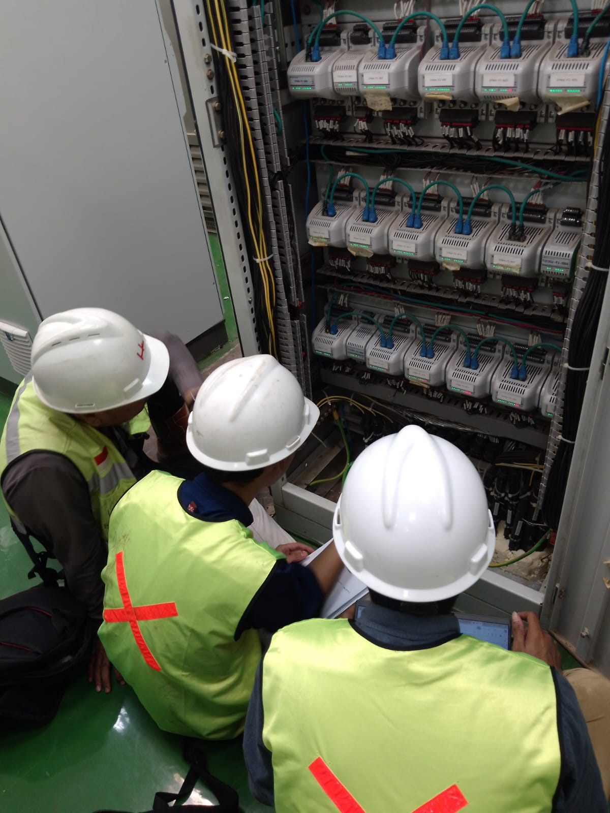
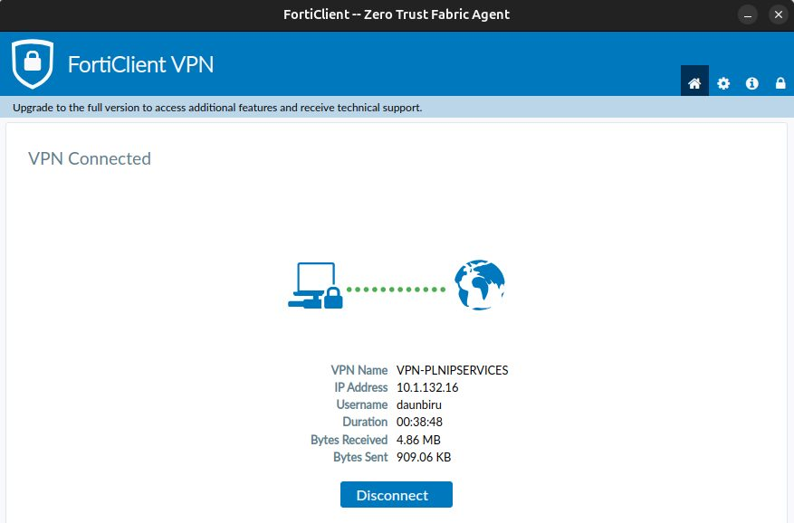
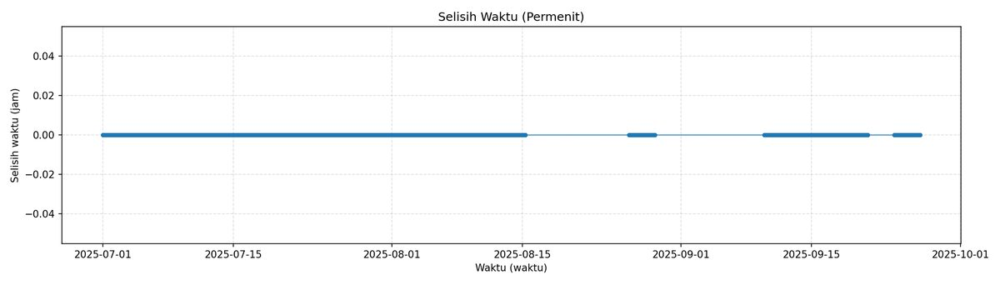
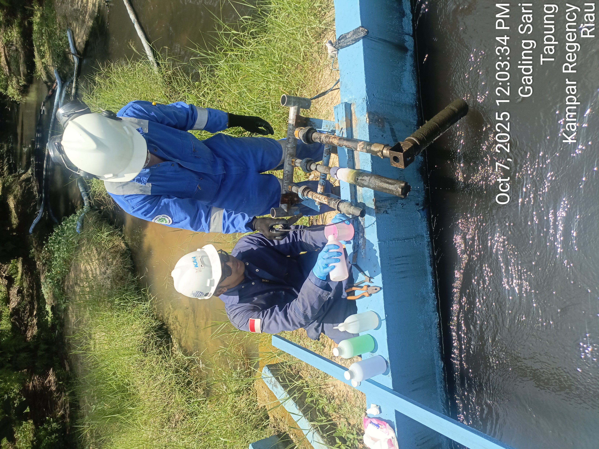
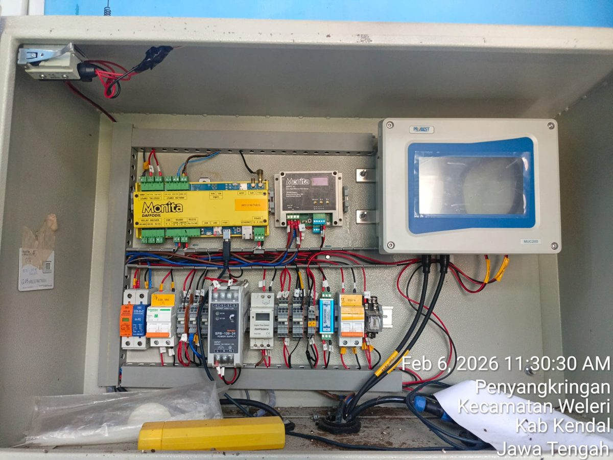
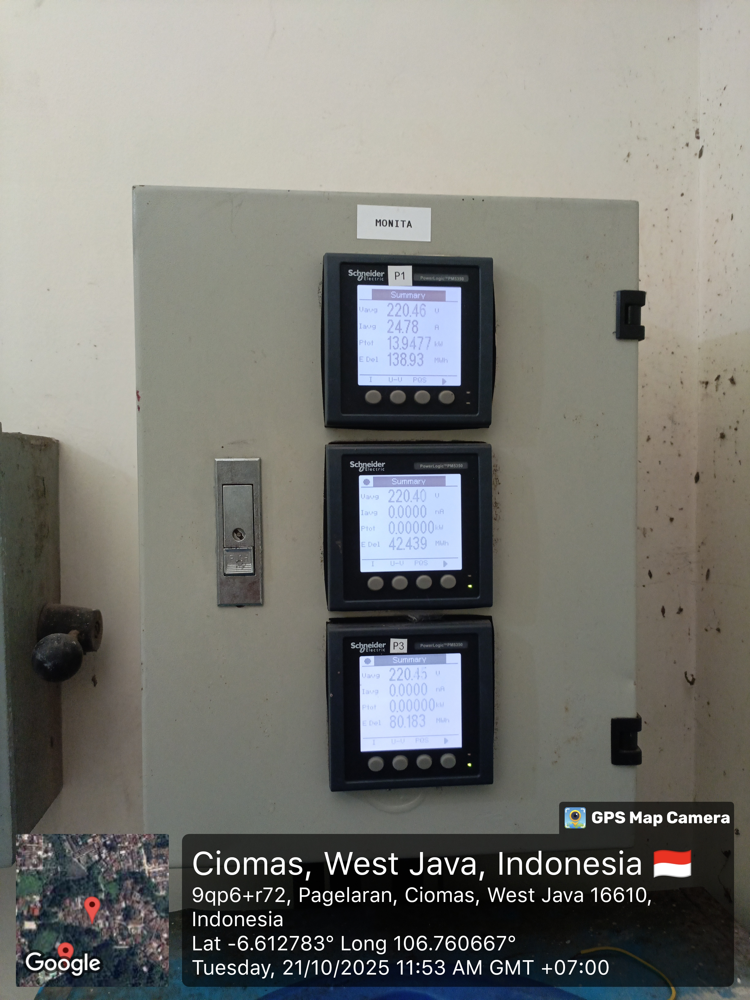
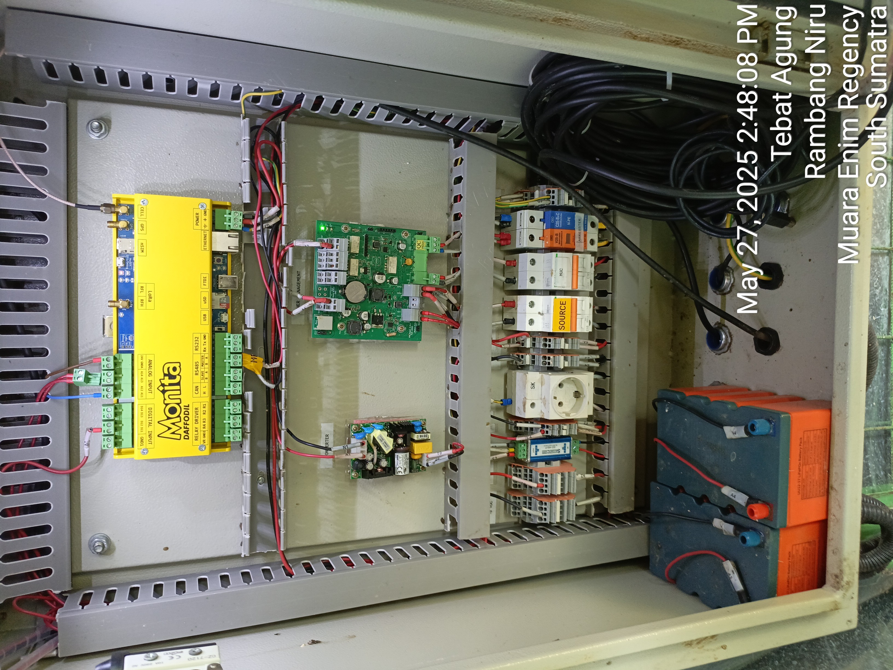

01
CAPTURE
IoT · Sensors
Real-time monitoring Carbon Capture terintegrasi smart sensors. Mengembangkan dan mengkodekan instrumen sensor untuk pengumpulan data langsung.
Saya membangun sistem monitoring industri — dari konfigurasi PLC & SCADA di lapangan & IoT.
Lulusan Teknik Fisika UGM (GPA 3.35) dengan pengalaman PKL di PT Pertamina RU VI Balongan, Intern di SKK MIGAS, dan Bekerja di PT Daun Biru Engineering.
Saat ini saya memimpin eksekusi proyek monitoring & SCADA, mengonfigurasi sistem monitoring online (MONITA) mulai dari sensor, modul RTU, hingga server di pembangkit dan industri.
Pendekatan saya: kerja tim yang solid, komunikasi teknis yang jelas, komitmen pada profesionalisme & standar engineering, serta K3.
Proyek-proyek yang saya kerjakan dari nol — survei, desain, konfigurasi, hingga commissioning di lapangan.
IoT · Sensors
Real-time monitoring Carbon Capture terintegrasi smart sensors. Mengembangkan dan mengkodekan instrumen sensor untuk pengumpulan data langsung.
Wintek HMI · SCADA · Monitoring
Instalasi penuh sistem monitoring furnace laboratorium Kimia ITB — sensor, panel, SCADA/HMI azbil.
Monitoring · IoT
Pembangunan monitoring online PLTD Selayar dari sensor hingga server MONITA.
Monitoring · HVAC
Monitoring heat pump hotel berbasis program CMTP Midea & komunikasi Modbus.
SCADA · HMI
HMI monitoring area pelabuhan Tanjung Mas — pompa polder, kolam, dan alarm.
Migrasi · Data
Migrasi data Fuel Monitoring System kapal ke platform PLN Icon Plus.
Pekerjaan maintenance, troubleshooting, dan support teknis di lapangan proyek klien.






